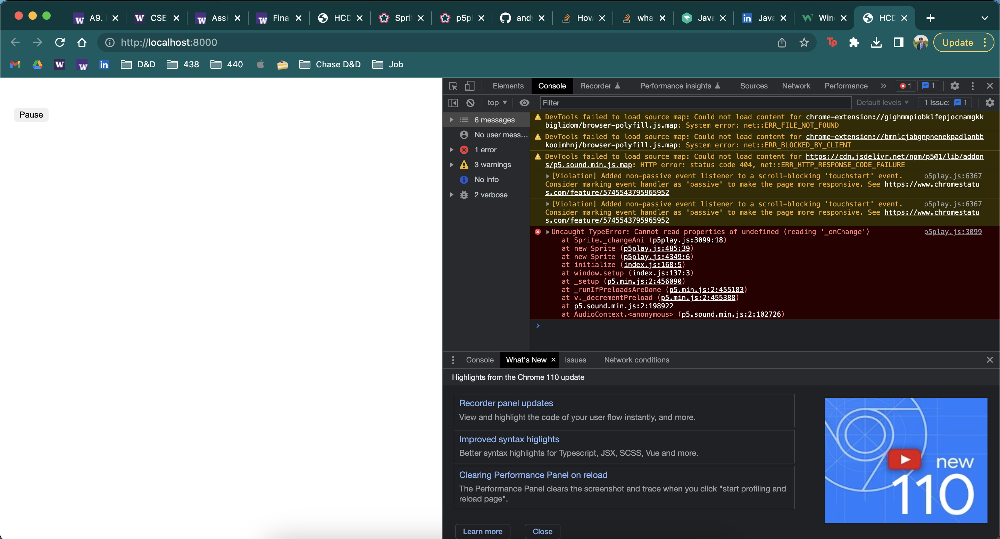
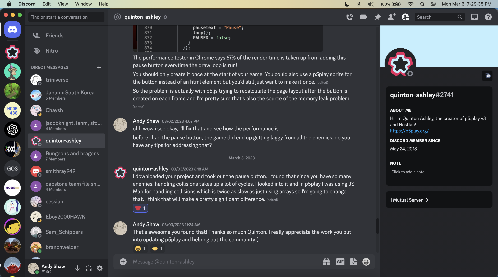

FP1 Writeup.
Overview and Usage
My 2D game, which can be found here, features a Sun celestial ninja who has the power to bend the elements of fire, earth, water, sun, and air. The ninja must defend against shadow warriors who are growing stronger and trying to attack the Sun itself. To fight these shadow warriors, the player can shoot sun orbs that damage enemies with the left mouse button and move around using the WASD keys. However, the player must be careful not to collide with the shadow warriors, as this will cause damage. As the player defeats more enemies, they'll collect experience points that can be used to level up and become even more powerful. After every few levels, the player can choose to upgrade their bending abilities or their health, speed, or defense, which will help them defeat even more enemies and ultimately save the Sun from danger.

Development Process
Adding a Sword Option
The sword was a great addition to the game. I had to think about how I would implement it since I had an idea of how I wanted it to work. I ended up needing to read more documentation about creating sprites, and fortunately, p5play came out with a new way to initialize their sprite class. I used a line sprite that would rotate around the player and this created the effect I wanted. Then, I slapped on an animation and I was satisfied with the result.

Adding a Play Again and Pause Button
Adding these buttons was fairly easy. For playing again, since p5 already requires code for initialization, I could run it again when the button is pressed. Luckily, I factored my code in a way that made this a few lines of code with minor tweaks. As for the pause button, it was really easy to implement since I already have situations in the game that require it to pause. Though, it's a bit buggy since the game pauses regularly without a pause button. This makes the function of the pause button weird when the game is already paused and its text content incorrect. In the future, I would want the button to be disabled when the game is paused. Initially, the pause button was in the draw function, but after trying to optimize my code, I realized this could be done in the setup, using less resources.

Balancing the Game
Balancing the game only required a few minor tweaks. I reduced the amount of damage certain skills did and mainly reduced the defense upgrade. Now, the defense upgrade reduces a percentage of itself, instead of a full percentage. Also, I added darkness to the game. As you can see below, over time, enemies become more difficult to see (due to low contrast) as time increases. I want the game to be difficult and not really last any longer than 10 minutes, because even with the performance updates, it is still slow. In the future, if I have the time, I want to split my code into separate files and use JSON to separate types of variables. This was a suggestion given to me by my instructor, Hannah.

Cleaning Code
My code was really ugly. I still plan to fix it, but there were a lot of times where I named variables inconsistently and had bad code quality. Now all my functions are camelcased and my global variables are uppercase. This was thanks to the CMD+Shift+H Find and replace all functionality in VSCode.
Removing Performance Inefficiencies
This was mainly thanks to Quinton, the creator of p5play. I mentioned to him that the program begins to run slowly when more enemies spawn. He ended up changing the library to use an array instead of a map to check for collisions, which significantly reduced resources. I also removed a few things in my code that were unecessary, such as specifying the diameter of center sprites when their animation already has one and using fewer flag variables. Now, the performance issues are more of a limitation due to planck (the physics engine) and p5, though small inefficiencies in my code exist that I plan to fix.
Issue Deep-Dive
Adding a sword to my game was a challenging task. I wanted the sword to move based on the mouse position, but the p5play library doesn't work well with moving canvases when calculating mouse position. I tried adapting my existing bullet code to work for the sword, but it wasn't instant, which meant the sword needed time to rotate and stick to the player. To create a hitbox similar to a sword, I used a new sprite option called the line/chain, but it was very buggy and didn't support many of the fields that the library sprites do. I eventually discovered that I needed to create a group for the sword and access the first available element to stick it to the moving player. However, the line hitbox wasn't perfect and the line location was displaced depending on which quadrant the mouse was in. I decided to keep this displacement as fine-tuning the sword to work exactly where the mouse is would be extremely difficult. I also faced issues with the sword animation as it would be displaced incorrectly and rotate along the wrong axis when added to the line. To work around this, I made four different swords that were rotated slightly to match the hitbox of the line sprite I created. Other issues I faced included my timer stacking on itself and updating my code without affecting other parts of the game. To resolve the timer issue, I cleared it whenever playing the game again, and I extensively tested my game whenever I made a change to avoid breaking other things in my code. Although this process was time-consuming, it was worthwhile as it helped me narrow down issues that would have been harder to find later on.


Ideas and Future
- Tracking High Scores and Tutorial Completion
- Adding Boss Levels
- Adding Enemies
- Improving Visuals (Upgrade Tracker, Images on Upgrade Cards, Cleaner Background)
Project Scope
Fortunately, everything I wanted to complete for this milestone I completed on time. Though, the sword doesn't interact as perfectly as I wanted it to, I am satisfied with my progress and my expectations for the final project deliverable are the same. Though, I know it will be much more work due to the nature of each addition I want to make to the game.
Time Management
I was able to finish everything I wanted to on time despite some challenges. There were moments when I found myself working on tasks out of order because I was getting bored or lost. This approach led to some confusion and added extra time to the development process. In the future, I plan to create a more structured plan and stick to it to avoid any unnecessary complications. Furthermore, I learned a lot from this experience. I now have a better understanding of the p5play library and how to work with moving canvases. I also gained insight into sprite creation and how to use different options to create unique hitboxes. Overall, this project taught me to be patient, persistent, and creative when faced with obstacles in coding.
Implementation Plan
My implementation plan will be the same for the final. I plan on first, being able to make different enemies, then adding a boss, which itself, is a different enemy. This will be a slight overhaul of my existing code for enemies, but I have an idea of how I will complete it since I have done it before. Next, as for incorporating a database, this will continue to be the largest challenge for the project since I have little experience with cloud databases. I am excited to see how it goes and if I get familiar with databases enough and have enough time, I could see myself extending this project to include stretch goals.
Kudos
Quinton Ashley (creator of p5play)
